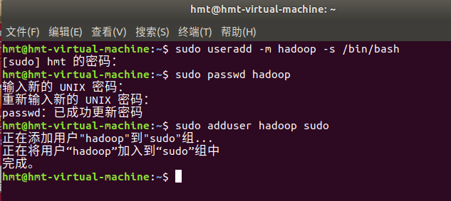

网站用户行为分析（大数据课设）
一. 环境搭建
（一）安装Linux系统(ubuntu18.04.6)


安装tools

（二）安装Hadoop
创建hadoop用户
如果你安装 Ubuntu 的时候不是用的 “hadoop” 用户，那么需要增加一个名为 hadoop 的用户。
首先按 ctrl+alt+t 打开终端窗口，输入如下命令创建新用户
1
sudo useradd -m hadoop -s /bin/bash
接着使用如下命令设置密码，可简单设置为 hadoop，按提示输入两次密码
1
sudo passwd hadoop
可为 hadoop 用户增加管理员权限，方便部署，避免一些对新手来说比较棘手的权限问题
1
sudo adduser hadoop sudo
更新apt
用 hadoop 用户登录后,我们先更新一下 apt，后续我们使用 apt 安装软件，如果没更新可能有一些软件安装不了。按 ctrl+alt+t 打开终端窗口，执行如下命令：
1
sudo apt-get update

安装一下vim
1
sudo apt-get install vim

安装ssh、配置ssh无密码登录
集群、单节点模式都需要用到 SSH 登陆（类似于远程登陆，你可以登录某台 Linux 主机，并且在上面运行命令），Ubuntu 默认已安装了 SSH client，此外还需要安装 SSH server：
1
sudo apt-get install openssh-server

安装后，可以使用如下命令登陆本机：
1
ssh localhost

但这样登陆是需要每次输入密码的，我们需要配置成SSH无密码登陆比较方便。
首先退出刚才的 ssh，就回到了我们原先的终端窗口，然后利用 ssh-keygen 生成密钥，并将密钥加入到授权中：
1
2
3
4exit # 退出刚才的 ssh localhost
cd ~/.ssh/ #若没有该目录请先执行一次ssh localhost
ssh-keygen -t rsa # 会有提示，都按回车就可以
cat ./id_rsa.pub >> ./authorized_keys # 加入授权现在就可以直接登录了

安装Java环境
在Linux命令行界面中，执行如下Shell命令（注意：当前登录用户名是hadoop）：
1
2
3
4
51.cd /usr/lib
2.sudo mkdir jvm #创建/usr/lib/jvm目录用来存放JDK文件
3.cd ~ #进入hadoop用户的主目录
4.cd /home/hadoop #注意区分大小写字母，刚才已经通过FTP软件把JDK安装包jdk-8u162-linux-x64.tar.gz上传到该目录下
5. sudo tar -zxvf /home/hadoop/jdk-8u162-linux-x64.tar.gz -C /usr/lib/ #把JDK文件解压到/usr/lib/jvm目录下

JDK文件解压缩以后，可以执行如下命令到/usr/lib/jvm目录查看一下：
1
21.cd /usr/lib/jvm
2.ls可以看到，在/usr/lib/jvm目录下有个jdk1.8.0_162目录。
 下面继续执行如下命令，设置环境变量：
下面继续执行如下命令，设置环境变量：1
21.cd ~
2.vim ~/.bashrc上面命令使用vim编辑器（查看vim编辑器使用方法）打开了hadoop这个用户的环境变量配置文件，请在这个文件的开头位置，添加如下几行内容：
1
2
3
4export JAVA_HOME=/usr/lib/jvm/jdk1.8.0_162
export JRE_HOME=${JAVA_HOME}/jre
export CLASSPATH=.:${JAVA_HOME}/lib:${JRE_HOME}/lib
export PATH=${JAVA_HOME}/bin:$PATH保存.bashrc文件并退出vim编辑器。然后，继续执行如下命令让.bashrc文件的配置立即生效：
1
source ~/.bashrc


这时，可以使用如下命令查看是否安装成功：
1
java -version
如果能够在屏幕上返回如下信息，则说明安装成功：

安装Hadoop2.7.1
我们选择将 Hadoop 安装至 /usr/local/ 中：
1
2
3
41.sudo tar -zxvf /home/hadoop/hadoop-2.7.1.tar.gz -C /usr/local # 解压到/usr/local中
2.cd /usr/local/
3. sudo mv ./hadoop-2.7.1/ ./hadoop # 将文件夹名改为hadoop
4.sudo chown -R hadoop ./hadoop # 修改文件权限

Hadoop 解压后即可使用。输入如下命令来检查 Hadoop 是否可用，成功则会显示 Hadoop 版本信息：
1
2cd /usr/local/hadoop
./bin/hadoop version

Hadoop单机配置(非分布式)
我们将 input 文件夹中的所有文件作为输入，筛选当中符合正则表达式 dfs[a-z.]+ 的单词并统计出现的次数，最后输出结果到 output 文件夹中。
1
2
3
4
51.cd /usr/local/hadoop
2.mkdir ./input
3.cp ./etc/hadoop/*.xml ./input # 将配置文件作为输入文件
4../bin/hadoop jar ./share/hadoop/mapreduce/hadoop-mapreduce-examples-2.7.1.jar grep ./input ./output 'dfs[a-z.]+'
5.cat ./output/* # 查看运行结果执行成功后如下所示，输出了作业的相关信息，输出的结果是符合正则的单词 dfsadmin 出现了1次


Hadoop 默认不会覆盖结果文件，因此再次运行上面实例会提示出错，需要先将 ./output 删除。
1
rm -r ./output

Hadoop伪分布式配置
Hadoop 可以在单节点上以伪分布式的方式运行，Hadoop 进程以分离的 Java 进程来运行，节点既作为 NameNode 也作为 DataNode，同时，读取的是 HDFS 中的文件。
Hadoop 的配置文件位于 /usr/local/hadoop/etc/hadoop/ 中，伪分布式需要修改2个配置文件core-site.xml 和 hdfs-site.xml 。Hadoop的配置文件是 xml 格式，每个配置以声明 property 的 name 和 value 的方式来实现。
修改配置文件core-site.xml

1
2cd /usr/local/hadoop/etc/hadoop
vim core-site.xml1
2
3
4
5
6
7
8
9
10
11<configuration>
<property>
<name>hadoop.tmp.dir</name>
<value>file:/usr/local/hadoop/tmp</value>
<description>Abase for other temporary directories.</description>
</property>
<property>
<name>fs.defaultFS</name>
<value>hdfs://localhost:9000</value>
</property>
</configuration>
同样的，修改配置文件hdfs-site.xml：
1
vim hdfs-site.xml
1
2
3
4
5
6
7
8
9
10
11
12
13
14<configuration>
<property>
<name>dfs.replication</name>
<value>1</value>
</property>
<property>
<name>dfs.namenode.name.dir</name>
<value>file:/usr/local/hadoop/tmp/dfs/name</value>
</property>
<property>
<name>dfs.datanode.data.dir</name>
<value>file:/usr/local/hadoop/tmp/dfs/data</value>
</property>
</configuration>
Hadoop 的运行方式是由配置文件决定的（运行 Hadoop 时会读取配置文件），因此如果需要从伪分布式模式切换回非分布式模式，需要删除 core-site.xml 中的配置项。
此外，伪分布式虽然只需要配置 fs.defaultFS 和 dfs.replication 就可以运行（官方教程如此），不过若没有配置 hadoop.tmp.dir 参数，则默认使用的临时目录为 /tmp/hadoo-hadoop，而这个目录在重启时有可能被系统清理掉，导致必须重新执行 format 才行。所以我们进行了设置，同时也指定 dfs.namenode.name.dir 和 dfs.datanode.data.dir，否则在接下来的步骤中可能会出错。
配置完成后，执行 NameNode 的格式化:
1
2cd /usr/local/hadoop
./bin/hdfs namenode -format成功的话，会看到 “successfully formatted” 的提示

接着开启 NameNode 和 DataNode 守护进程。
1
21.cd /usr/local/hadoop
2../sbin/start-dfs.sh #start-dfs.sh是个完整的可执行文件，中间没有空格若出现如下SSH提示，输入yes即可。
启动时可能会出现如下 WARN 提示：WARN util.NativeCodeLoader: Unable to load native-hadoop library for your platform… using builtin-java classes where applicable WARN 提示可以忽略，并不会影响正常使用。

运行Hadoop伪分布式实例
上面的单机模式，vim 例子读取的是本地数据，伪分布式读取的则是 HDFS 上的数据。要使用 HDFS，首先需要在 HDFS 中创建用户目录：
1
./bin/hdfs dfs -mkdir -p /user/hadoop
接着将 ./etc/hadoop 中的 xml 文件作为输入文件复制到分布式文件系统中，即将 /usr/local/hadoop/etc/hadoop 复制到分布式文件系统中的 /user/hadoop/input 中。我们使用的是 hadoop 用户，并且已创建相应的用户目录 /user/hadoop ，因此在命令中就可以使用相对路径如 input，其对应的绝对路径就是 /user/hadoop/input:
1
2./bin/hdfs dfs -mkdir input
./bin/hdfs dfs -put ./etc/hadoop/*.xml input复制完成后，可以通过如下命令查看文件列表：
1
./bin/hdfs dfs -ls input

伪分布式运行 MapReduce 作业的方式跟单机模式相同，区别在于伪分布式读取的是HDFS中的文件（可以将单机步骤中创建的本地 input 文件夹，输出结果 output 文件夹都删掉来验证这一点）。
1
./bin/hadoop jar ./share/hadoop/mapreduce/hadoop-mapreduce-examples-2.7.1.jar grep input output 'dfs[a-z.]+'
查看运行结果的命令（查看的是位于 HDFS 中的输出结果）：
1
./bin/hdfs dfs -cat output/*
结果如下，注意到刚才我们已经更改了配置文件，所以运行结果不同。

我们也可以将运行结果取回到本地：
1
2
31.rm -r ./output # 先删除本地的 output 文件夹（如果存在）
2../bin/hdfs dfs -get output ./output # 将 HDFS 上的 output 文件夹拷贝到本机
3.cat ./output/*Hadoop 运行程序时，输出目录不能存在，否则会提示错误 “org.apache.hadoop.mapred.FileAlreadyExistsException: Output directory hdfs://localhost:9000/user/hadoop/output already exists” ，因此若要再次执行，需要执行如下命令删除 output 文件夹:
1
./bin/hdfs dfs -rm -r output # 删除 output 文件夹
 若要关闭 Hadoop，则运行
若要关闭 Hadoop，则运行1
./sbin/stop-dfs.sh

（三）安装MYSQL
使用以下命令即可进行mysql安装，注意安装前先更新一下软件源以获得最新版本：
1
2sudo apt-get update #更新软件源
sudo apt-get install mysql-server #安装mysql
上述命令会安装以下包：
apparmor
mysql-client-5.7
mysql-common
mysql-server
mysql-server-5.7
mysql-server-core-5.7
因此无需再安装mysql-client等。安装过程会提示设置mysql root用户的密码，设置完成后等待自动安装即可。默认安装完成就启动了mysql启动和关闭mysql服务器：
1
2service mysql start
service mysql stop
确认是否启动成功，mysql节点处于LISTEN状态表示启动成功：
1
sudo netstat -tap | grep mysql

进入mysql shell界面：
1
sudo mysql -u root -p

解决利用sqoop导入MySQL中文乱码的问题（可以插入中文，但不能用sqoop导入中文）
导致导入时中文乱码的原因是character_set_server默认设置是latin11
show variables like "char%";

(1)编辑配置文件
1
sudo vi /etc/mysql/mysql.conf.d/mysqld.cnf
(2)在[mysqld]下添加一行
1
character_set_server=utf8

(3)重启MySQL服务
1
service mysql restart

(4)登陆MySQL，并查看MySQL目前设置的编码
1
sudo mysql -u root -p
1
show variables like "char%";

下载mysql jdbc包

1
21. sudo tar -zxvf /home/hadoop/mysql-connector-java.gz #解压
2.cp mysql-connector-java-5.1.40/mysql-connector-java-5.1.40-bin.jar /usr/local/hive/lib #将mysql-connector-java-5.1.40-bin.jar拷贝到/usr/local/hive/lib目录下


启动并登陆mysql shell
1
2service mysql start #启动mysql服务
sudo mysql -u root -p #登陆shell界面
新建hive数据库
1
mysql> create database hive; #这个hive数据库与hive-site.xml中localhost:3306/hive的hive对应，用来保存hive元数据

配置mysql允许hive接入
1
2mysql> grant all on *.* to hive@localhost identified by 'hive'; #将所有数据库的所有表的所有权限赋给hive用户，后面的hive是配置hive-site.xml中配置的连接密码
mysql> flush privileges; #刷新mysql系统权限关系表
启动hive
启动hive之前，请先启动hadoop集群
1
2start-dfs.sh
hive #启动hive注意，我们这里已经配置了PATH，所以，不要把start-all.sh和hive命令的路径加上。如果没有配置PATH，请加上路径才能运行命令，比如，本教程Hadoop安装目录是“/usr/local/hadoop”，Hive的安装目录是“/usr/local/hive”，因此，启动hadoop和hive，也可以使用下面带路径的方式：
1
2
3
4cd /usr/local/hadoop #进入Hadoop安装目录
./sbin/start-dfs.sh
cd /usr/local/hive
./bin/hive
可以在里面输入SQL语句，如果要退出Hive交互式执行环境，可以输入如下命令：
1
exit;
（四）安装HBase
hbase安装
1.1 解压安装包hbase-2.2.2-bin.tar.gz至路径 /usr/local，命令如下：
1
sudo tar -zxvf /home/hadoop/hbase-1.1.2-bin.tar.gz -C /usr/local
1.2 将解压的文件名hbase-2.2.2改为hbase，以方便使用，命令如下：
1
sudo mv /usr/local/hbase-1.1.2 /usr/local/hbase

1.3 配置环境变量
将hbase下的bin目录添加到path中，这样，启动hbase就无需到/usr/local/hbase目录下，大大的方便了hbase的使用。教程下面的部分还是切换到了/usr/local/hbase目录操作，有助于初学者理解运行过程，熟练之后可以不必切换。
编辑~/.bashrc文件
1
vi ~/.bashrc
如果没有引入过PATH请在~/.bashrc文件尾行添加如下内容：
1
export PATH=$PATH:/usr/local/hbase/bin

编辑完成后，再执行source命令使上述配置在当前终端立即生效，命令如下：
1
source ~/.bashrc

1.4 添加HBase权限
1
2cd /usr/local
sudo chown -R hadoop ./hbase #将hbase下的所有文件的所有者改为hadoop
1.5 查看HBase版本，确定hbase安装成功,命令如下：
1
/usr/local/hbase/bin/hbase version
命令执行后，输出信息截图如下：

hbase配置
2.1 配置/usr/local/hbase/conf/hbase-env.sh 命令如下：
1
vi /usr/local/hbase/conf/hbase-env.sh
配置JAVA_HOME，HBASE_CLASSPATH，HBASE_MANAGES_ZK.
HBASE_CLASSPATH设置为本机Hadoop安装目录下的conf目录（即/usr/local/hadoop/conf）
1
2
3export JAVA_HOME=/usr/lib/jvm/jdk1.8.0_162
export HBASE_CLASSPATH=/usr/local/hadoop/conf
export HBASE_MANAGES_ZK=true

2.2 配置/usr/local/hbase/conf/hbase-site.xml
用命令vi打开并编辑hbase-site.xml，命令如下：
1
vi /usr/local/hbase/conf/hbase-site.xml
修改hbase.rootdir，指定HBase数据在HDFS上的存储路径；将属性hbase.cluter.distributed设置为true。假设当前Hadoop集群运行在伪分布式模式下，在本机上运行，且NameNode运行在9000端口。
1
2
3
4
5
6
7
8
9
10
11
12
13
14
15
16
17
18
19<configuration>
<property>
<name>hbase.rootdir</name>
<value>hdfs://localhost:9000/hbase</value>
</property>
<property>
<name>hbase.cluster.distributed</name>
<value>true</value>
</property>
</configuration>hbase.rootdir指定HBase的存储目录；hbase.cluster.distributed设置集群处于分布式模式.
截图如下：

测试运行HBase
第一步：首先登陆ssh，之前设置了无密码登陆，因此这里不需要密码；再切换目录至/usr/local/hadoop ；再启动hadoop，如果已经启动hadoop请跳过此步骤。命令如下：
1
2
3
4ssh localhost
cd /usr/local/hadoop
./sbin/start-dfs.sh
jps #能看到NameNode,DataNode和SecondaryNameNode都已经成功启动，表示hadoop启动成功
第二步：切换目录至/usr/local/hbase;再启动HBase.命令如下：
1
2
3cd /usr/local/hbase
bin/start-hbase.sh
jps #启动成功，输入命令jps，看到以下界面说明hbase启动成功
进入shell界面：
1
bin/hbase shell

停止HBase运行,命令如下：
1
bin/stop-hbase.sh

（五）安装Hive
下载并加压hive安装包

1
2
3
41.sudo tar -zxvf /home/hadoop/apache-hive-1.2.1-bin.tar.gz -C /usr/local # 解压到/usr/local中
2.cd /usr/local
3.sudo mv apache-hive-1.2.1-bin hive # 将文件夹名改为hive
4.sudo chown -R hadoop:hadoop hive # 修改文件权限
配置环境变量
为了方便使用，我们把hive命令加入到环境变量中去，
请使用vim编辑器打开.bashrc文件，命令如下：1
vim ~/.bashrc
在该文件最前面一行添加如下内容：
1
2
3export HIVE_HOME=/usr/local/hive
export PATH=$PATH:$HIVE_HOME/bin
export HADOOP_HOME=/usr/local/hadoop
HADOOP_HOME需要被配置成你机器上Hadoop的安装路径，比如这里是安装在/usr/local./hadoop目录。
保存退出后，运行如下命令使配置立即生效：1
source ~/.bashrc

修改/usr/local/hive/conf下的hive-site.xml
执行如下命令：
1
2cd /usr/local/hive/conf
mv hive-default.xml.template hive-default.xml
上面命令是将hive-default.xml.template重命名为hive-default.xml；
然后，使用vim编辑器新建一个配置文件hive-site.xml，命令如下：1
2cd /usr/local/hive/conf
vim hive-site.xml在hive-site.xml中添加如下配置信息：
1
2
3
4
5
6
7
8
9
10
11
12
13
14
15
16
17
18
19
20
21
22
23
24<?xml version="1.0" encoding="UTF-8" standalone="no"?>
<?xml-stylesheet type="text/xsl" href="configuration.xsl"?>
<configuration>
<property>
<name>javax.jdo.option.ConnectionURL</name>
<value>jdbc:mysql://localhost:3306/hive?createDatabaseIfNotExist=true</value>
<description>JDBC connect string for a JDBC metastore</description>
</property>
<property>
<name>javax.jdo.option.ConnectionDriverName</name>
<value>com.mysql.jdbc.Driver</value>
<description>Driver class name for a JDBC metastore</description>
</property>
<property>
<name>javax.jdo.option.ConnectionUserName</name>
<value>hive</value>
<description>username to use against metastore database</description>
</property>
<property>
<name>javax.jdo.option.ConnectionPassword</name>
<value>hive</value>
<description>password to use against metastore database</description>
</property>
</configuration>
在安装完mysql并配置完成之后启动hive
启动hive之前，请先启动hadoop集群
1
2start-dfs.sh
hive #启动hive注意，我们这里已经配置了PATH，所以，不要把start-all.sh和hive命令的路径加上。如果没有配置PATH，请加上路径才能运行命令，比如，本教程Hadoop安装目录是“/usr/local/hadoop”，Hive的安装目录是“/usr/local/hive”，因此，启动hadoop和hive，也可以使用下面带路径的方式：
1
2
3
4cd /usr/local/hadoop #进入Hadoop安装目录
./sbin/start-dfs.sh
cd /usr/local/hive
./bin/hive可以在里面输入SQL语句，如果要退出Hive交互式执行环境，可以输入如下命令：
1
exit;
（六）安装Eclipse

1 | sudo tar -zxvf /home/hadoop/eclipse-4.7.0-linux..gz -C /usr/local #解压到/usr/local |

1 | cd /usr/local/eclipse |

（七）安装sqoop
下载并解压sqoop1.4.6
下面执行以下命令：
1
2
3
4
5cd ~ #进入当前用户的用户目录
sudo tar -zxvf /home/hadoop/sqoop-1.4.6.bin__had.gz -C /usr/local #解压安装文件
cd /usr/local
sudo mv sqoop-1.4.6.bin__hadoop-2.0.4-alpha sqoop #修改文件名
sudo chown -R hadoop:hadoop sqoop #修改文件夹属主，如果你当前登录用户名不是hadoop，请修改成你自己的用户名

修改配置文件sqoop-env.sh
1
2
3cd sqoop/conf/
cat sqoop-env-template.sh >> sqoop-env.sh #将sqoop-env-template.sh复制一份并命名为sqoop-env.sh
vim sqoop-env.sh #编辑sqoop-env.sh修改sqoop-env.sh的如下信息
1
2
3
4
5
6export HADOOP_COMMON_HOME=/usr/local/hadoop
export HADOOP_MAPRED_HOME=/usr/local/hadoop
export HBASE_HOME=/usr/local/hbase
export HIVE_HOME=/usr/local/hive
#export ZOOCFGDIR= #如果读者配置了ZooKeeper,也需要在此配置ZooKeeper的路径
配置环境变量
打开当前用户的环境变量配置文件：
1
vim ~/.bashrc
在配置文件第一行键入如下信息：
1
2
3export SQOOP_HOME=/usr/local/sqoop
export PATH=$PATH:$SBT_HOME/bin:$SQOOP_HOME/bin
export CLASSPATH=$CLASSPATH:$SQOOP_HOME/lib
保存该文件，退出vim编辑器。
然后，执行下面命令让配置文件立即生效:1
source ~/.bashrc

将mysql驱动包拷贝到$SQOOP_HOME/lib
下面要把MySQL驱动程序拷贝到$SQOOP_HOME/lib目录下，首先请在Linux系统的浏览器中请点击mysql驱动包下载地址下载驱动包。下载后，一般文件会被浏览器默认放置在当前用户的下载目录下，本教程采用hadoop用户登录Linux系统，因此，下载文件被默认放置在“/home/hadoop/下载”目录下面。
下面执行命令拷贝文件：1
2
3
4
5
6
7
8cd /home/hadoop #切换到下载路径，如果你下载的文件不在这个目录下，请切换到下载文件所保存的目录
sudo tar -zxvf /home/hadoop/mysql-connector-java-5.1.49.tar.gz #解压mysql驱动包
ls #这时就可以看到解压缩后得到的目录mysql-connector-java-5.1.49
cp /home/hadoop/mysql-connector-java-5.1.49/mysql-connector-java-5.1.49.jar /usr/local/sqoop/lib
cp /home/hadoop/mysql-connector-java-5.1.49/mysql-connector-java-5.1.49-bin.jar /usr/local/sqoop/lib
测试与MySQL的连接
首先请确保mysql服务已经启动了，如果没有启动，请执行下面命令启动：
1
service mysql start
然后就可以测试sqoop与MySQL之间的连接是否成功：
1
sqoop list-databases --connect jdbc:mysql://127.0.0.1:3306/ --username root -P
mysql的数据库列表显示在屏幕上表示连接成功，如下图：

错误分析：
一开始报错

此时我用的是mysql-connector-java-5.1.40.tar.gz ，但这个里面没有mysql-connector-java-5.1.40.jar 包，后来换了mysql-connector-java-5.1.49.tar.gz这个，但仍然报错，我进入MySQL查看了一下MySQL中的各个用户，发现root用户没有密码
1
select user,host,authentication_string,password_expired from user;

然后我将root用户删除重新创建了root用户
1
2
3
4
5drop user root@localhost;
flush privileges;
create user root@localhost identified by 'root';
grant all privileges on *.* to root@localhost identified by 'root';
flush privileges;
再次连接成功了

二.网站用户行为分析
一. 本地数据集上传到数据仓库Hive
1. 实验数据集的下载
请登录Linux系统（本教程统一采用hadoop用户登录），用xftp将数据下载到相应目录下

现在，请在Linux系统中打开一个终端（可以使用快捷键Ctrl+Alt+T），执行下面命令：
1 | cd /home/hadoop |

通过上面命令，就进入到了user.zip文件所在的目录，并且可以看到有个user.zip文件。
下面需要把user.zip进行解压缩，我们需要首先建立一个用于运行本案例的目录bigdatacase，请执行以下命令：
1 | 1.cd /usr/local |

现在你就可以看到在dataset目录下有两个文件：raw_user.csv和small_user.csv。
我们执行下面命令取出前面5条记录看一下：
1 | head -5 raw_user.csv |
可以看到，前5行记录如下：

可以看出，每行记录都包含5个字段，数据集中的字段及其含义如下：
1 | user_id（用户id） |
2. 数据集的预处理
删除文件第一行记录，即字段名称
raw_user和small_user中的第一行都是字段名称，我们在文件中的数据导入到数据仓库Hive中时，不需要第一行字段名称，因此，这里在做数据预处理时，删除第一行1
2
3
4
5
6
7
81.cd /usr/local/bigdatacase/dataset
2.//下面删除raw_user中的第1行
3.sed -i '1d' raw_user.csv //1d表示删除第1行，同理，3d表示删除第3行，nd表示删除第n行
4.//下面删除small_user中的第1行
5.sed -i '1d' small_user.csv
6.//下面再用head命令去查看文件的前5行记录，就看不到字段名称这一行了
7.head -5 raw_user.csv
8.head -5 small_user.csv
接下来的操作中，我们都是用small_user.csv这个小数据集进行操作，这样可以节省时间。等所有流程都跑通以后，你就可以使用大数据集raw_user.csv去测试一遍了。
对字段进行预处理
下面对数据集进行一些预处理，包括为每行记录增加一个id字段（让记录具有唯一性）、增加一个省份字段（用来后续进行可视化分析），并且丢弃user_geohash字段（后面分析不需要这个字段）。
下面我们要建一个脚本文件pre_deal.sh，请把这个脚本文件放在dataset目录下，和数据集small_user.csv放在同一个目录下：1
21.cd /usr/local/bigdatacase/dataset
2.vim pre_deal.sh上面使用vim编辑器新建了一个pre_deal.sh脚本文件，请在这个脚本文件中加入下面代码：
1
2
3
4
5
6
7
8
9
10
11
12
13
14
15
16
17
18
19
20#!/bin/bash
#下面设置输入文件，把用户执行pre_deal.sh命令时提供的第一个参数作为输入文件名称
infile=$1
#下面设置输出文件，把用户执行pre_deal.sh命令时提供的第二个参数作为输出文件名称
outfile=$2
#注意！！最后的$infile > $outfile必须跟在}’这两个字符的后面
awk -F "," 'BEGIN{
srand();
id=0;
Province[0]="山东";Province[1]="山西";Province[2]="河南";Province[3]="河北";Province[4]="陕西";Province[5]="内蒙古";Province[6]="上海市";
Province[7]="北京市";Province[8]="重庆市";Province[9]="天津市";Province[10]="福建";Province[11]="广东";Province[12]="广西";Province[13]="云南";
Province[14]="浙江";Province[15]="贵州";Province[16]="新疆";Province[17]="西藏";Province[18]="江西";Province[19]="湖南";Province[20]="湖北";
Province[21]="黑龙江";Province[22]="吉林";Province[23]="辽宁"; Province[24]="江苏";Province[25]="甘肃";Province[26]="青海";Province[27]="四川";
Province[28]="安徽"; Province[29]="宁夏";Province[30]="海南";Province[31]="香港";Province[32]="澳门";Province[33]="台湾";
}
{
id=id+1;
value=int(rand()*34);
print id"\t"$1"\t"$2"\t"$3"\t"$5"\t"substr($6,1,10)"\t"Province[value]
}' $infile > $outfile
上面的代码的基本形式是：
1
awk -F "," '处理逻辑' $infile > $outfile
使用awk可以逐行读取输入文件，并对逐行进行相应操作。其中，-F参数用于指出每行记录的不同字段之间用什么字符进行分割，这里是用逗号进行分割。处理逻辑代码需要用两个英文单引号引起来。 $infile是输入文件的名称，我们这里会输入raw_user.csv，$outfile表示处理结束后输出的文件名称，我们后面会使用user_table.txt作为输出文件名称。
在上面的pre_deal.sh代码的处理逻辑部分，srand()用于生成随机数的种子，id是我们为数据集新增的一个字段，它是一个自增类型，每条记录增加1，这样可以保证每条记录具有唯一性。我们会为数据集新增一个省份字段，用来进行后面的数据可视化分析，为了给每条记录增加一个省份字段的值，这里，我们首先用Province[]数组用来保存全国各个省份信息，然后，在遍历数据集raw_user.csv的时候，每当遍历到其中一条记录，使用value=int(rand()*34)语句随机生成一个0-33的整数，作为Province省份值，然后从Province[]数组当中获取省份名称，增加到该条记录中。
substr($6,1,10)这个语句是为了截取时间字段time的年月日，方便后续存储为date格式。awk每次遍历到一条记录时，每条记录包含了6个字段，其中，第6个字段是时间字段，substr($6,1,10)语句就表示获取第6个字段的值，截取前10个字符，第6个字段是类似”2014-12-08 18″这样的字符串（也就是表示2014年12月8日18时），substr($6,1,10)截取后，就丢弃了小时，只保留了年月日。
另外，在print id”\t”$1″\t”$2″\t”$3″\t”$5″\t”substr($6,1,10)”\t”Province[value]这行语句中，我们丢弃了每行记录的第4个字段，所以，没有出现$4。我们生成后的文件是“\t”进行分割，这样，后续我们去查看数据的时候，效果让人看上去更舒服，每个字段在排版的时候会对齐显示，如果用逗号分隔，显示效果就比较乱。最后，保存pre_deal.sh代码文件，退出vim编辑器。
下面就可以执行pre_deal.sh脚本文件，来对small_user.csv进行数据预处理，命令如下:1
21.cd /usr/local/bigdatacase/dataset
2.bash ./pre_deal.sh small_user.csv user_table.txt可以使用head命令查看生成的user_table.txt，不要直接打开，文件过大，会出错，下面查看前10行数据：
1
1.head -10 user_table.txt
可以得到如下结果：

导入数据库
下面要把user_table.txt中的数据最终导入到数据仓库Hive中。为了完成这个操作，我们会首先把user_table.txt上传到分布式文件系统HDFS中，然后，在Hive中创建一个外部表，完成数据的导入。
a.启动HDFS
HDFS是Hadoop的核心组件，因此，需要使用HDFS，必须安装Hadoop。这里假设你已经安装了Hadoop，本教程使用的是Hadoop2.7.1版本，安装目录是“/usr/local/hadoop”。下面，请登录Linux系统，打开一个终端，执行下面命令启动Hadoop：
1
21.cd /usr/local/hadoop
2../sbin/start-all.sh然后，执行jps命令看一下当前运行的进程：
1
jps
如果出现下面这些进程，说明Hadoop启动成功了:

b.把user_table.txt上传到HDFS中
现在，我们要把Linux本地文件系统中的user_table.txt上传到分布式文件系统HDFS中，存放在HDFS中的“/bigdatacase/dataset”目录下。
首先，请执行下面命令，在HDFS的根目录下面创建一个新的目录bigdatacase，并在这个目录下创建一个子目录dataset，如下：1
21.cd /usr/local/hadoop
2../bin/hdfs dfs -mkdir -p /bigdatacase/dataset
然后，把Linux本地文件系统中的user_table.txt上传到分布式文件系统HDFS的“/bigdatacase/dataset”目录下，命令如下：
1
21.cd /usr/local/hadoop
2../bin/hdfs dfs -put /usr/local/bigdatacase/dataset/user_table.txt /bigdatacase/dataset下面可以查看一下HDFS中的user_table.txt的前10条记录，命令如下：
1
21.cd /usr/local/hadoop
2../bin/hdfs dfs -cat /bigdatacase/dataset/user_table.txt | head -10
c.在Hive上创建数据库
关于什么是数据仓库Hive？Hive的运行基本原理是什么？如何开展Hive简单编程实践？
本案例教程需要安装数据仓库Hive，这里假设你已经完成了Hive的安装，并且使用MySQL数据库保存Hive的元数据。本教程安装的是Hive2.1.0版本，安装目录是“/usr/local/hive”。
下面，请在Linux系统中，再新建一个终端（可以在刚才已经建好的终端界面的左上角，点击“终端”菜单，在弹出的子菜单中选择“新建终端”）。因为需要借助于MySQL保存Hive的元数据，所以，请首先启动MySQL数据库：1
1.service mysql start //可以在Linux的任何目录下执行该命令
由于Hive是基于Hadoop的数据仓库，使用HiveQL语言撰写的查询语句，最终都会被Hive自动解析成MapReduce任务由Hadoop去具体执行，因此，需要启动Hadoop，然后再启动Hive。由于前面我们已经启动了Hadoop，所以，这里不需要再次启动Hadoop。下面，在这个新的终端中执行下面命令进入Hive：
1
21.cd /usr/local/hive
2../bin/hive //启动Hive启动成功以后，就进入了“hive>”命令提示符状态，可以输入类似SQL语句的HiveQL语句。


下面，我们要在Hive中创建一个数据库dblab，命令如下：
1
21.hive> create database dblab;
2.hive> use dblab;
d.创建外部表
关于数据仓库Hive的内部表和外部表的区别，本教程采用外部表方式。
这里我们要在数据库dblab中创建一个外部表bigdata_user，它包含字段（id, uid, item_id, behavior_type, item_category, date, province），请在hive命令提示符下输入如下命令：1
hive> CREATE EXTERNAL TABLE dblab.bigdata_user(id INT,uid STRING,item_id STRING,behavior_type INT,item_category STRING,visit_date DATE,province STRING) COMMENT 'Welcome to xmu dblab!' ROW FORMAT DELIMITED FIELDS TERMINATED BY '\t' STORED AS TEXTFILE LOCATION '/bigdatacase/dataset';
 ****e.查询数据
****e.查询数据
上面已经成功把HDFS中的“/bigdatacase/dataset”目录下的数据加载到了数据仓库Hive中，我们现在可以使用下面命令查询一下：1
21.hive> select * from bigdata_user limit 10;
2.hive> select behavior_type from bigdata_user limit 10;
二. Hive数据分析
1.操作Hive
请登录Linux系统（本教程统一采用hadoop用户名登录系统），然后，打开一个终端（可以按快捷键Ctrl+Alt+T）。
本教程中，Hadoop的安装目录是“/usr/local/hadoop”，Hive的安装目录是“/usr/local/hive”。
因为需要借助于MySQL保存Hive的元数据，所以，请首先启动MySQL数据库，请在终端中输入下面命令：
1 | service mysql start //可以在Linux的任何目录下执行该命令 |
由于Hive是基于Hadoop的数据仓库，使用HiveQL语言撰写的查询语句，最终都会被Hive自动解析成MapReduce任务由Hadoop去具体执行，因此，需要启动Hadoop，然后再启动Hive。
请执行下面命令启动Hadoop（如果你已经启动了Hadoop就不用再次启动了）：
1 | 1.cd /usr/local/hadoop |
如果出现下面这些进程，说明Hadoop启动成功了：

下面，继续执行下面命令启动进入Hive：
1 | 1.cd /usr/local/hive |
通过上述过程，我们就完成了MySQL、Hadoop和Hive三者的启动。
启动成功以后，就进入了“hive>”命令提示符状态，可以输入类似SQL语句的HiveQL语句。


然后，在“hive>”命令提示符状态下执行下面命令：
1 | 1.hive> use dblab; //使用dblab数据库 |
执行结果如下：

可以执行下面命令查看表的简单结构：
1 | 1.hive> desc bigdata_user; |
执行结果如下：

2.简单查询分析
先测试一下简单的指令：
1 | 1.hive> select behavior_type from bigdata_user limit 10;//查看前10位用户对商品的行为 |
执行结果如下：

如果要查出每位用户购买商品时的多种信息，输出语句格式为 select 列1，列2，….，列n from 表名；
比如我们现在查询前20位用户购买商品时的时间和商品的种类
1 | 1.hive> select visit_date,item_category from bigdata_user limit 20; |
执行结果如下：

有时我们在表中查询可以利用嵌套语句，如果列名太复杂可以设置该列的别名，以简化我们操作的难度，以下我们可以举个例子：
1 | 1.hive> select e.bh, e.it from (select behavior_type as bh, item_category as it from bigdata_user) as e limit 20; |
执行结果如下：

这里简单的做个讲解，behavior_type as bh ,item_category as it就是把behavior_type 设置别名 bh ,item_category 设置别名 it，FROM的括号里的内容我们也设置了别名e，这样调用时用e.bh,e.it,可以简化代码。
3.查询条数统计分析
经过简单的查询后我们同样也可以在select后加入更多的条件对表进行查询,下面可以用函数来查找我们想要的内容。
用聚合函数count()计算出表内有多少条行数据
1
hive> select count(*) from bigdata_user;//用聚合函数count()计算出表内有多少条行数据
我们可以看到，得出的结果为OK下的那个数字300000（因为我们的small_user.csv中包含了300000条记录，导入到Hive中）。

在函数内部加上distinct，查出uid不重复的数据有多少条
下面继续执行操作：
1
hive> select count(distinct uid) from bigdata_user;//在函数内部加上distinct，查出uid不重复的数据有多少条
执行结果如下：

查询不重复的数据有多少条(为了排除客户刷单情况)
1
hive>select count(*) from (select uid,item_id,behavior_type,item_category,visit_date,province from bigdata_user group by uid,item_id,behavior_type,item_category,visit_date,province having count(*)=1)a;
执行结果如下：

可以看出，排除掉重复信息以后，只有284444条记录。
注意：嵌套语句最好取别名，就是上面的a，否则很容易出现如下错误.
4.关键字条件查询分析
以关键字的存在区间为条件的查询
使用where可以缩小查询分析的范围和精确度，下面用实例来测试一下。
(1)查询2014年12月10日到2014年12月13日有多少人浏览了商品1
hive>select count(*) from bigdata_user where behavior_type='1' and visit_date<'2014-12-13' and visit_date>'2014-12-10';
执行结果如下：

（2）以月的第n天为统计单位，依次显示第n天网站卖出去的商品的个数
1
hive> select count(distinct uid), day(visit_date) from bigdata_user where behavior_type='4' group by day(visit_date);
执行结果如下：


关键字赋予给定值为条件，对其他数据进行分析
取给定时间和给定地点，求当天发出到该地点的货物的数量
1
1.hive> select count(*) from bigdata_user where province='江西' and visit_date='2014-12-12' and behavior_type='4';
执行结果如下：

5.根据用户行为分析
查询一件商品在某天的购买比例或浏览比例
1
hive> select count(*) from bigdata_user where visit_date='2014-12-11'and behavior_type='4';//查询有多少用户在2014-12-11购买了商品
1
hive> select count(*) from bigdata_user where visit_date ='2014-12-11';//查询有多少用户在2014-12-11点击了该店
根据上面语句得到购买数量和点击数量，两个数相除即可得出当天该商品的购买率。

查询某个用户在某一天点击网站占该天所有点击行为的比例（点击行为包括浏览，加入购物车，收藏，购买）
1
1.hive> select count(*) from bigdata_user where uid=10001082 and visit_date='2014-12-12';//查询用户10001082在2014-12-12点击网站的次数
1
1.hive> select count(*) from bigdata_user where visit_date='2014-12-12';//查询所有用户在这一天点击该网站的次数
上面两条语句的结果相除，就得到了要要求的比例。

给定购买商品的数量范围，查询某一天在该网站的购买该数量商品的用户id
1
hive> select uid from bigdata_user where behavior_type='4' and visit_date='2014-12-12' group by uid having count(behavior_type='4')>5;//查询某一天在该网站购买商品超过5次的用户id

6.用户实时查询分析
某个地区的用户当天浏览网站的次数
1 | 1.hive> create table scan(province STRING,scan INT) COMMENT 'This is the search of bigdataday' ROW FORMAT DELIMITED FIELDS TERMINATED BY '\t' STORED AS TEXTFILE;//创建新的数据表进行存储 |
执行结果如下：


三.Hive,MYSQL,HBase数据互导
1.Hive准备工作
本教程需要安装Hive、MySQL、HBase和Sqoop。在前面的第一个步骤中，我们在安装Hive的时候就已经一起安装了MySQL（因为我们采用MySQL来存储Hive的元数据），所以，现在你只需要再安装HBase和Sqoop。
（1）完成HBase的安装。本教程把HBase安装在了“/usr/local/hbase”目录下，采用伪分布式配置，也就是HBase会使用HDFS来存储数据。
（2）完成Sqoop的安装。本教程下载的是sqoop-1.4.6.bin__hadoop-2.0.4-alpha.tar.gz，安装目录是“/usr/local/sqoop”。虽然这个sqoop是为hadoop2.0.4版本开发的，本教程Hadoop版本是2.7.1，但是，依然可以顺利使用。
2.Hive预操作
请登录Linux系统（本教程统一采用hadoop用户名登录系统），然后，打开一个终端（可以按快捷键Ctrl+Alt+T）。
本教程中，Hadoop的安装目录是“/usr/local/hadoop”，Hive的安装目录是“/usr/local/hive”。
因为需要借助于MySQL保存Hive的元数据，所以，请首先启动MySQL数据库，请在终端中输入下面命令：
1 | service mysql start //可以在Linux的任何目录下执行该命令 |
由于Hive是基于Hadoop的数据仓库，使用HiveQL语言撰写的查询语句，最终都会被Hive自动解析成MapReduce任务由Hadoop去具体执行，因此，需要启动Hadoop，然后再启动Hive。
请执行下面命令启动Hadoop（如果你已经启动了Hadoop就不用再次启动了）：
1 | 1.cd /usr/local/hadoop |
如果出现下面这些进程，说明Hadoop启动成功了：
下面，继续执行下面命令启动进入Hive：
1 | 1.cd /usr/local/hive |
通过上述过程，我们就完成了MySQL、Hadoop和Hive三者的启动。
启动成功以后，就进入了“hive>”命令提示符状态，可以输入类似SQL语句的HiveQL语句。
然后，在“hive>”命令提示符状态下执行下面命令：
创建临时表user_action
1
hive> create table dblab.user_action(id STRING,uid STRING, item_id STRING, behavior_type STRING, item_category STRING, visit_date DATE, province STRING) COMMENT 'Welcome to XMU dblab! ' ROW FORMAT DELIMITED FIELDS TERMINATED BY '\t' STORED AS TEXTFILE;
这个命令执行完以后，Hive会自动在HDFS文件系统中创建对应的数据文件“/user/hive/warehouse/dblab.db/user_action”。
我们可以新建一个终端，执行命令查看一下，确认这个数据文件在HDFS中确实被创建了，请在新建的终端中执行下面命令：1
21.cd /usr/local/hadoop
2../bin/hdfs dfs -ls /user/hive/warehouse/dblab.db/user_action可以看到如下结果：


这说明，这个数据文件在HDFS中确实被创建了。注意，这个HDFS中的数据文件，在我们后面的“使用HBase Java API把数据从本地导入到HBase中”操作中会使用到。
将bigdata_user表中的数据插入到user_action(执行时间：10秒左右)
在第二个步骤中，我们已经在Hive中的dblab数据库中创建了一个外部表bigdata_user。下面把dblab.bigdata_user数据插入到dblab.user_action表中，命令如下：1
1.hive> INSERT OVERWRITE TABLE dblab.user_action select * from dblab.bigdata_user;

请执行下面命令查询上面的插入命令是否成功执行：
1
1.hive>select * from user_action limit 10;

3.使用Sqoop将数据从Hive导入MYSQL
启动Hadoop集群、MySQL服务
前面我们已经启动了Hadoop集群和MySQL服务。这里请确认已经按照前面操作启动成功。将前面生成的临时表数据从Hive导入到 MySQL 中，包含如下四个步骤。
(1)登录 MySQL
请在Linux系统中新建一个终端，执行下面命令：1
sudo mysql –u root –p
为了简化操作，本教程直接使用root用户登录MySQL数据库，但是，在实际应用中，建议在MySQL中再另外创建一个用户。
执行上面命令以后，就进入了“mysql>”命令提示符状态。
(2)创建数据库1
2
3mysql> show databases; #显示所有数据库
mysql> create database dblab; #创建dblab数据库
mysql> use dblab; #使用数据库
注意：请使用下面命令查看数据库的编码：
1
mysql>show variables like "char%";
会显示类似下面的结果：

(3)创建表
下面在MySQL的数据库dblab中创建一个新表user_action，并设置其编码为utf-8：1
mysql> CREATE TABLE `dblab`.`user_action` (`id` varchar(50),`uid` varchar(50),`item_id` varchar(50),`behavior_type` varchar(10),`item_category` varchar(50), `visit_date` DATE,`province` varchar(20)) ENGINE=InnoDB DEFAULT CHARSET=utf8;

创建成功后，输入下面命令退出MySQL：
1 | mysql> exit; |
(4)导入数据(执行时间：20秒左右)
注意，刚才已经退出MySQL，回到了Shell命令提示符状态。下面就可以执行数据导入操作，
1 | 1. cd /usr/local/sqoop |

查看MySQL中user_action表数据
下面需要再次启动MySQL，进入“mysql>”命令提示符状态：
1
sudo mysql –u root –p
然后执行下面命令查询user_action表中的数据：
1
21.mysql> use dblab;
2.mysql> select * from user_action limit 10;
从Hive导入数据到MySQL中，成功！
4.使用Sqoop将数据从MySQL导入HBase
- 启动Hadoop集群、MySQL服务、HBase服务
之前我们已经启动了Hadoop集群、MySQL服务，这里请确认已经按照前面操作启动成功。这里我们再启动HBase服务。本教程中，HBase的安装目录是“/usr/local/hbase”，而且本教程中，HBase配置为使用HDFS存储数据。
请新建一个终端，执行下面命令：
1 | 1.cd /usr/local/hbase |
- 启动HBase shell
1 | 1.cd /usr/local/hbase |
启动成功后，就进入了“hbase>”命令提示符状态。

- 创建表user_action
1 | 1.hbase> create 'user_action', { NAME => 'f1', VERSIONS => 5} |
上面命令在HBase中创建了一个user_action表，这个表中有一个列族f1（你愿意把列族名称取为其他名称也可以，比如列族名称为userinfo），历史版本保留数量为5。

- 导入数据(执行时间：30秒左右)
下面新建一个终端，执行下面命令导入数据：
1 | 1.cd /usr/local/sqoop |


- 查看HBase中user_action表数据
现在，再次切换到HBase Shell运行的那个终端窗口，在“hbase>”命令提示符下，执行下面命令查询刚才导入的数据：
1 | 1.habse> scan 'user_action',{LIMIT=>10} #只查询前面10行 |


5.使用HBase Java API把数据从本地导入到HBase中
启动Hadoop集群、HBase服务
请首先确保启动了Hadoop集群和HBase服务。如果还没有启动，请在Linux系统中打开一个终端。
首先，按照下面命令启动Hadoop：1
21.cd /usr/local/hadoop
2../sbin/start-all.sh然后，按照下面命令启动HBase：
1
21.cd /usr/local/hbase
2../bin/start-hbase.sh数据准备
实际上，我们也可以编写Java程序，直接从HDFS中读取数据加载到HBase。但是，这里我们展示的是如何用JAVA程序把本地数据导入到HBase中。你只要把程序做简单修改，就可以实现从HDFS中读取数据加载到HBase。
首先，请将之前的user_action数据从HDFS复制到Linux系统的本地文件系统中，命令如下：1
2
3
4
5
61.cd /usr/local/bigdatacase/dataset
2./usr/local/hadoop/bin/hdfs dfs -get /user/hive/warehouse/dblab.db/user_action .
3. #将HDFS上的user_action数据复制到本地当前目录，注意'.'表示当前目录
4.cat ./user_action/* | head -10 #查看前10行数据
5.cat ./user_action/00000* > user_action.output #将00000*文件复制一份重命名为user_action.output，*表示通配符
6.head user_action.output #查看user_action.output前10行
编写数据导入程序
我们这里采用Eclipse编写Java程序实现HBase数据导入功能。关于如何使用Eclipse编写Java程序调用HBase API，请使用Eclipse编写ImportHBase程序（Java代码在本文最后的附录部分），并打包成可执行jar包，命名为ImportHBase.jar。
然后，请在“/usr/local/bigdatacase/”目录下面新建一个hbase子目录，用来存放ImportHBase.jar。数据导入
现在开始执行数据导入操作。
使用Java程序将数据从本地导入HBase中，导入前，请先清空user_action表。
请在之前已经打开的HBase Shell窗口中（也就是在“hbase>”命令提示符下）执行下面操作：1
2hbase> truncate 'user_action'
hbase> scan 'user_action',{LIMIT=>10}
下面就可以运行hadoop jar命令运行程序：
1
1./usr/local/hadoop/bin/hadoop jar /usr/local/bigdatacase/hbase/ImportHBase.jar HBaseImportTest /usr/local/bigdatacase/dataset/user_action.output

查看HBase中user_action表数据
下面，再次切换到HBase Shell窗口，执行下面命令查询数据：1
habse> scan 'user_action',{LIMIT=>10} #只查询前面10行


实验顺利结束！
四.利用R进行数据可视化分析
1.环境
R语言包的安装方式如下：
Ubuntu自带的APT包管理器中的R安装包总是落后于标准版，因此需要添加新的镜像源把APT包管理中的R安装包更新到最新版。
请登录Linux系统，打开一个终端，然后执行下面命令（并注意保持网络连通，可以访问互联网，因为安装过程要下载各种安装文件）：
利用vim打开/etc/apt/sources.list文件
1 | sudo gedit /etc/apt/sources.list |

在文件的最后一行添加厦门大学的镜像源：
1 | deb https://mirrors.tuna.tsinghua.edu.cn/CRAN/bin/linux/ubuntu bionic-cran40/ |

退出vim，更新软件源列表
1 | sudo apt update && sudo apt upgrade |
1 | 如果更新软件源出现由于没有公钥，无法验证下列签名的错误，请执行如下命令 |


2.安装R语言
1 | sudo apt-get install r-base |


会提示“您希望继续执行吗？[Y/n]”，可以直接键盘输入“Y”，就可以顺利安装结束。
安装结束后，可以执行下面命令启动R：
1 | R |

启动后，会显示如下信息，并进入“>”命令提示符状态：
“>”就是R的命令提示符，你可以在后面输入R语言命令。
可以执行下面命令退出R：
1 | >q() |

3.可视化分析MySQL中的数据
1.安装依赖库
修改R的源
1 | options()$repos ## 查看使用install.packages安装时的默认镜像 |

为了完成可视化功能，我们需要为R安装一些依赖库，包括：RMySQL、ggplot2、devtools和recharts。
RMySQL是一个提供了访问MySQL数据库的R语言接口程序的R语言依赖库。
ggplot2和recharts则是R语言中提供绘图可视化功能的依赖库。
请启动R进入R命令提示符状态,执行如下命令安装RMySQL：
1 | 1.> install.packages('RMySQL') |

上面命令执行后， 屏幕会提示”Would you like to user a personal library instead?(y/n)”等问题，只要遇到提问，都在键盘输入y后回车即可。然后，屏幕会显示“—在此连线阶段时请选用CRAN的镜子—”，并会弹出一个白色背景的竖条形窗口，窗口标题是“HTTPS CRAN mirros”，标题下面列出了很多国家的镜像列表，我们可以选择位于China的镜像，比如，选择“China(Beijing)[https]”，然后点击“ok”按钮，就开始安装了。安装过程需要几分钟（当然，也和当前网络速度有关系）。
由于不同用户的Ubuntu开发环境不一样，安装有很大可能因为缺少组件导致失败，如果出现如下错误信息：
只要根据错误给出的错误信息，进行操作即可。q()退出R命令提示符状态，回到Shell状态,笔者的系统是Ubuntu 16.04,那么，根据上面的英文错误信息，就需要在Shell命令提示符状态下执行下面命令安装libmariadb-client-lgpl-dev：
1 | 1.sudo apt-get install libmariadb-client-lgpl-dev |

然后，再次输入下面命令进入R命令提示符状态：
1 | R |
启动后，并进入“>”命令提示符状态。然后，执行如下命令安装绘图包ggplot2，如果还出现缺少组件的错误，请按照上面的解决方案解决！
1 | 1.> install.packages('ggplot2') |

然后，屏幕会显示“—在此连线阶段时请选用CRAN的镜子—”，并会弹出一个白色背景的竖条形窗口，窗口标题是“HTTPS CRAN mirros”，标题下面列出了很多国家的镜像列表，我们可以选择位于China的镜像，比如，选择“China(Beijing)[https]”，然后点击“ok”按钮，就开始安装了。这个命令运行后，大概需要安装10分钟时间（当然，也和当前网络速度有关系）。
下面继续运行下面命令安装devtools：
1 | 1.> install.packages('devtools') |

如果在上面安装devtools的过程中，又出现了错误，处理方法很简单，还是按照上面介绍的方法，根据屏幕上给出的英文错误信息，缺少什么软件，就用sudo apt-get install命令安装该软件就可以了。笔者在Ubuntu16.04上执行devtools安装时，出现了三次错误，笔者根据每次错误的英文提示信息，安装了三个软件libssl-dev、libssh2-1-dev、libcurl4-openssl-dev，安装命令如下：
1 | 1.sudo apt-get install libssl-dev |


读者在安装过程中，可能会出现不同的错误，按照同样的处理方法可以顺利解决。
下面在R命令提示符下再执行如下命令安装taiyun/recharts：
1 | 1.> devtools::install_github('taiyun/recharts') |
2.分析
以下分析使用的函数方法，都可以使用如下命令查询函数的相关文档。例如：查询sort()函数如何使用
1 | 1.?sort |
这时，就会进入冒号“:”提示符状态（也就是帮助文档状态），在冒号后面输入q即可退出帮助文档状态，返回到R提示符状态！
连接MySQL,并获取数据
请在Linux系统中新建另外一个终端，然后执行下面命令启动MySQL数据库：
1
1.service mysql start
下面，让我们查看一下MySQL数据库中的数据，请执行下面命令进入MySQL命令提示符状态：
1
1.mysql -u root -p
下面就可以输入一些SQL语句查询数据：
1
21.mysql> use dblab;
2.mysql> select * from user_action limit 10;
然后切换到刚才已经打开的R命令提示符终端窗口：
1
2
31.library(RMySQL)
2.conn <- dbConnect(MySQL(),dbname='dblab',username='root',password='hadoop',host="127.0.0.1",port=3306)
3.user_action <- dbGetQuery(conn,'select * from user_action')
分析消费者对商品的行为
1
0.summary(user_action$behavior_type)

summary() 函数可以得到样本数据类型和长度,如果样本是数值型,我们还能得到样本数据的最小值、最大值、四分位数以及均值信息。（包括计数、最小值、第一四分位数、中位数、第三四分位数和最大值）
得到结果：可以看出原来的MySQL数据中,消费者行为变量的类型是字符型。这样不好做比较，需要把消费者行为变量转换为数值型变量
1
1.summary(as.numeric(user_action$behavior_type))
得到结果：

接下来用柱状图表示：
1
22.library(ggplot2)
3.ggplot(user_action,aes(as.numeric(behavior_type)))+geom_histogram()在使用ggplot2库的时候，需要使用library导入库。ggplot()绘制时，创建绘图对象，即第一个图层，包含两个参数(数据与变量名称映射).变量名称需要被包含aes函数里面。ggplot2的图层与图层之间用“+”进行连接。ggplot2包中的geom_histogram()可以很方便的实现直方图的绘制，
aes()函数指定了变量的映射方式将数值型behavior_type列映射到x轴上。分析结果如下图:

从上图可以得到:大部分消费者行为仅仅只是浏览。只有很少部分的消费者会购买商品。
分析哪一类商品被购买总量前十的商品和被购买总量
1
2
30.temp <- subset(user_action,as.numeric(behavior_type)==4) # 获取子数据集
1.count <- sort(table(temp$item_category),decreasing = T) #排序
2.print(count[1:10]) # 获取第1到10个排序结果subset()函数，从某一个数据框中选择出符合某条件的数据或是相关的列.table()对应的就是统计学中的列联表，是一种记录频数的方法.sort()进行排序，返回排序后的数值向量。
在
user_action数据框中创建了一个子集temp，该子集包含在behavior_type列中数值等于4的所有行。代码使用了
table()函数对不同item_category的出现次数进行计数，然后使用sort()函数将计数结果按照频次从大到小进行排序。在sort()函数中，decreasing=T参数表示按照逆序排列得到结果：

结果第一行表示商品分类,该类下被消费的数次。
接下来用散点图表示:1
23.result <- as.data.frame(count[1:10]) #将count矩阵结果转换成数据框
4.ggplot(result,aes(Var1,Freq,col=factor(Var1)))+geom_point()通过 as.data.frame() 把矩阵等转换成为数据框.
分析结果如下图:
分析每年的哪个月份购买商品的量最多
从MySQL直接获取的数据中visit_date变量都是2014年份,并没有划分出具体的月份,那么可以在数据集增加一列月份数据。
1
20.month <- substr(user_action$visit_date,6,7) # visit_date变量中截取月份
1.user_action <- cbind(user_action,month) # user_action增加一列月份数据接下来用柱状图分别表示消费者购买量
1
2.ggplot(user_action,aes(as.numeric(behavior_type),col=factor(month)))+geom_histogram()+facet_grid(.~month)
aes()函数中的col属性可以用来设置颜色。factor()函数则是把数值变量转换成分类变量,作用是以不同的颜色表示。如果不使用factor()函数，颜色将以同一种颜色渐变的颜色表现。 facet_grid(.~month)表示柱状图按照不同月份进行分区。
由于MySQL获取的数据中只有11月份和12月份的数据,所以上图只有显示两个表格。
分析结果如下图：

分析国内哪个省份的消费者最有购买欲望
1
2
3
4
5
6
7
8
9
100.library(recharts)
1.rel <- as.data.frame(table(temp$province))
2.provinces <- rel$Var1
3.x = c()
4.for(n in provinces){
5.x[length(x)+1] = nrow(subset(temp,(province==n)))
6.}
7.mapData <- data.frame(province=rel$Var1,
8.count=x, stringsAsFactors=F) # 设置地图信息
9.eMap(mapData, namevar=~province, datavar = ~count) #画出中国地图nrow()用来计算数据集的行数。
分析结果如下图:
大数据案例网站用户购物行为分析所有实验步骤到此结束！
 wechat
wechat alipay
alipay